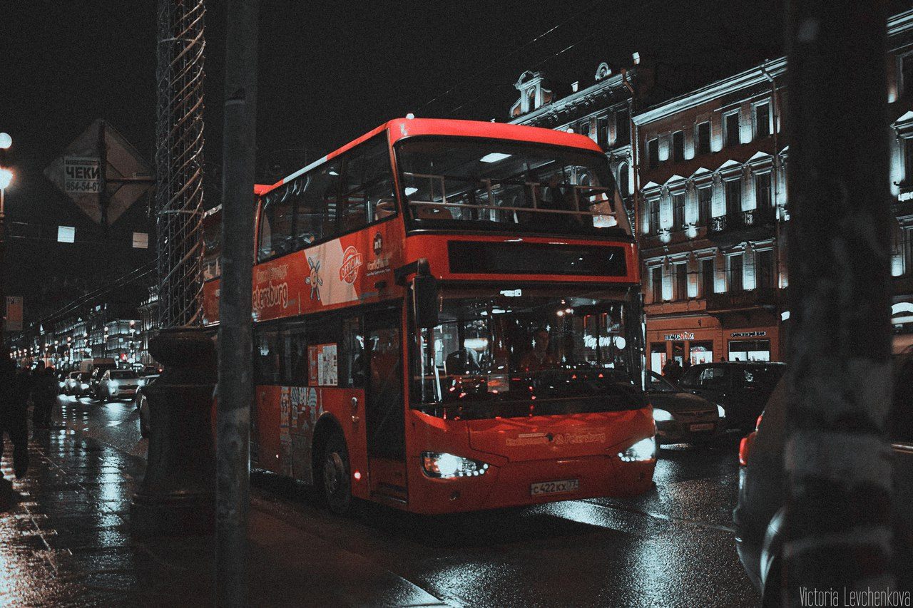

Добрый и позитивный творческий человек.
Я- фотограф,конструктор-модельер. Живу в Смоленске.
Не раз была фотографом на таких проеках как :
Архитектура Таланта и WorldSkills Russia Смоленск.
Будучи самоучкой, я получила все свои знания
и вдохновение в социальных сетях, сообществах онлайн-фотографии и фильмах.
Я мечтатель. Фотография - Это отражение моих глубоких эмоций,
страсти к неизвестности и стремления к красоте.